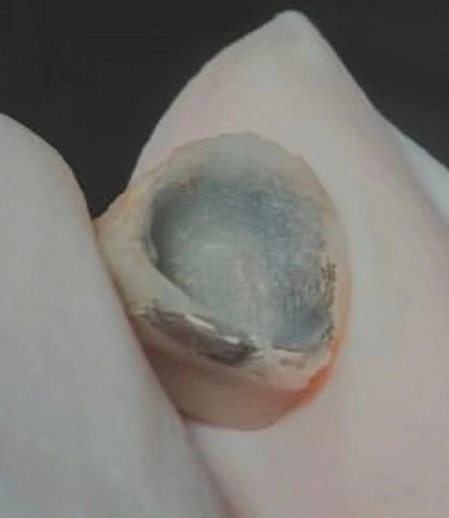

Insight 81 — وقتی روکش قدیمی بیمار، خودش روکش موقت میشه

توضیح بالینی
گاهی بیمار با یه روکش قبلی مراجعه میکنه و ما به هر دلیلی ناچار میشیم تراش دندون رو اصلاح کنیم. اگه این روکش سالم باشه، یعنی خودش افتاده باشه یا بهراحتی و بدون بریدن از روی دندون خارج بشه، میشه ازش به عنوان روکش موقت استفاده کرد. موقع خارج کردن روکش هم باید حواسمون باشه که ضربهی کنترلنشده به دندون وارد نکنیم، چون ممکنه به جای درآوردن روکش، خود دندون رو بشکونیم.
بعد از اصلاح تراش، روکش قبلی دیگه روی دندون گیر نداره و بیمار تا آماده شدن روکش جدید به یه روکش موقت نیاز داره. راه معمول اینه که یه روکش موقت از صفر ساخته بشه. ولی راه سادهتری هم وجود داره: همون روکش قبلی رو با رزین ریلاین میکنیم. سطح داخلی روکش با رزین پر میشه، روکش روی دندون تراشخورده قرار میگیره تا فرم جدید تراش رو ثبت کنه، و بعد از ست شدن رزین، اضافهها برداشته و مارجینها تمیز میشن. همین روکش به عنوان روکش موقت تحویل بیمار داده میشه.
با این روش، بیمار با روکشی میره که فرم و اکلوژنش براش آشناست و ساخت روکش موقت هم عملاً به چند دقیقه ریلاین خلاصه میشه.
محتوای این صفحه برای استفادهٔ آموزشی دندانپزشکان و دانشجویان دندانپزشکی تهیه شده است.